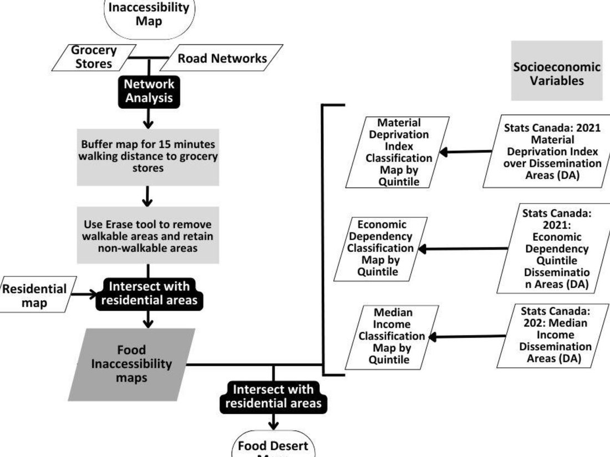
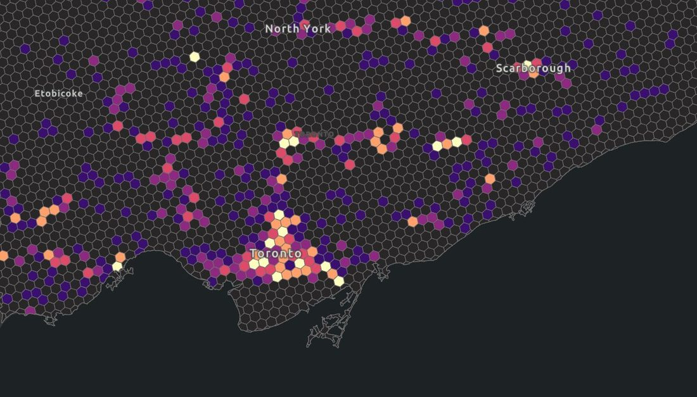
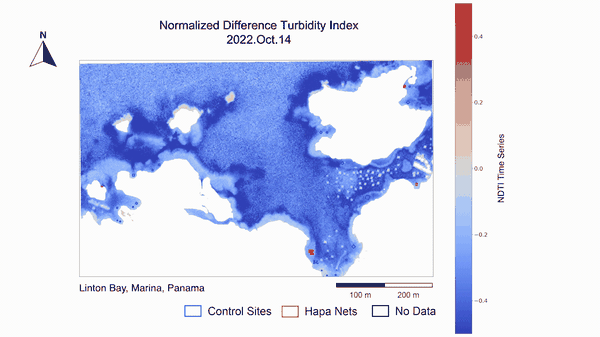
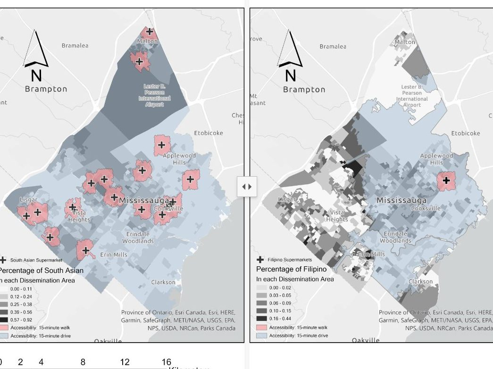
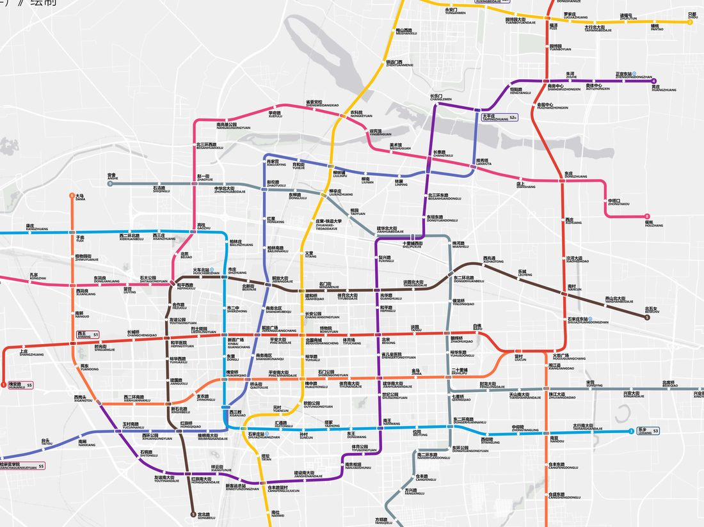
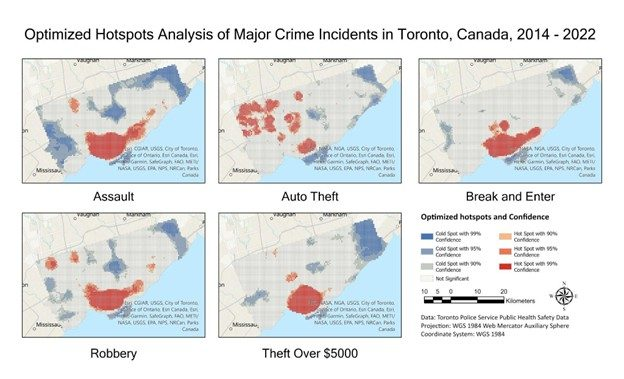

Urban Science · 2025
Identifying Food Deserts in Mississauga: A Comparative Analysis of Socioeconomic Indicators
Huda, T., Wang, A., Zhang, H., Gao, L., He, Y., & Zhu, T. · Urban Science, 9(7), 265
A lack of access to healthy food has been a problem for low-income residents in many developed urban areas. This study examines the spatial distribution of food deserts in Mississauga, one of Canada's most populous cities. Network analysis was employed to map geographic inaccessibility to essential nutritious food, defined as residential areas beyond a 15-minute walking distance from grocery stores. Socioeconomic indicators were integrated to identify regions that are socioeconomically disadvantaged and most affected by food inaccessibility. The model developed offers valuable tools for policymakers and urban planners to address food desert issues and improve access to healthy food.
View Publication →
What is "Good Growth" in Toronto?
Toronto is growing fast, and through policies like EHON the city has chosen to grow inward. This capstone project draws on permit data, the zoning reform timeline, and Major Transit Station Areas to trace where and what kind of housing actually gets built, and to ask who that growth is for.
View Project →
Sustainability Assessment of Sea Cucumber Farming
An environmental assessment of PanaSea's open-ocean sea cucumber farm in Linton Bay, Panama. On-site water samples are paired with PlanetScope satellite imagery to track chlorophyll and turbidity from 2020 to 2022, comparing hapa-net farming sites with nearby control areas to understand how restorative aquaculture interacts with the surrounding marine environment.
View Project →
The Food Desert in Mississauga
A GIS-based investigation of fresh-food access in Mississauga, combining 15-minute walk, drive, and transit network analysis with census data on income and population density. Field-collected price data from ethnic and non-ethnic markets adds another layer, showing how cultural retail networks shape what affordable, healthy food access really looks like.
View Project →
Subway Map: Shijiazhuang, Hebei Province, China
Based on the Shijiazhuang Rail Transit Network Plan (2021–2035).
View Project →
Spatial Analysis of Crimes in Toronto
Spatial and temporal distribution of crime by type in Toronto, 2014–2021.
View Project →